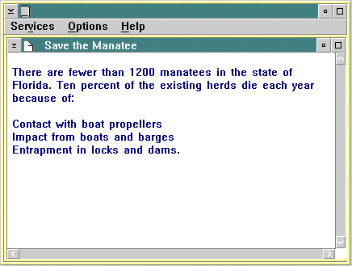

If an attribute value includes blank spaces, the value must be enclosed in single quotes. For example:
:font facename='Tms Rmn'.
Notice that the value has initial capitals. For this particular case, they are required; otherwise, the IPF compiler will not recognize them as valid values.
Using some of the tags described thus far, you could produce a source file like this:
:userdoc. :h1 res=001.Save the Manatee :p. There are fewer than 1200 manatees in the state of Florida. Ten percent of the existing herds die each year because of: :sl compact. :li.Contact with boat propellers :li.Impact from boats and barges :li.Entrapment in locks and dams. :esl. :euserdoc.
The output produced from the source file is an OS/2 standard window.
The menu-bar choices, Services, Options, and Help are provided automatically by IPF. The title-bar line, "Save the Manatee," is generated by the :h1. tag. The viewing area of the window displays the formatted information.

An OS/2 Standard Window Produced from Source File
The best way to learn about tags is to study the examples provided in the following sections, then create some windows of your own.